Lab
Rival 1
-
Bulbasaur: (Tail Whip), Tackle spam 0-13 Speedties
- If Growl turn 1 and <24 Atk, Tail Whip x2
- If Growl turn 2/3 and <24 Atk, Tail Whip x1
Route 1
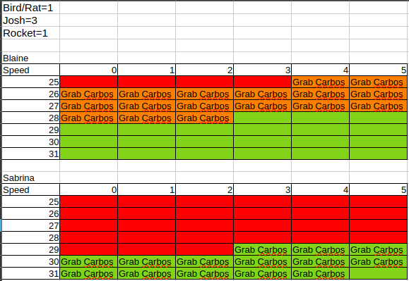
Viridian Forest
Pewter City
- Buy:
- 8x Potion (↓)
- 3x Antidote (↓)
- 3x Awakening (↓↓)
- 3x Repel (↓↓↓)
- Buy if you need Paras (FireRed only):
- 7x Potion (↓)
- 3x Antidote (↓)
- 3x Paralyze Heal (↓)
- 3x Awakening (↓)
- 3x Repel (↓↓↓)
Route 3
Mt. Moon
- Run up 8 tiles, then
- Register TM Case
- Equip Persim Berry if you got it.
- Use Repel
Route 4
- Talk to the Karate Man on the right and teach Mega Kick over Withdraw (Slot 4).
Cerulean City
- Grab hidden Rare Candy.
- Open your bag
- Rare Candy to level 20.
- Teach Bite over Bubble (Slot 3).
- Use 2x Potion.
Misty
- Staryu: Bite x2
- 93% to 2HKO
- Teach Water Pulse over Tackle (Slot 1).
- Heal for Rival so you can survive a Quick Attack and Vine Whip.
Rival 2
Bug Catcher Cale
- Caterpie: Bite
- Weedle: Bite
- Metapod: Bite
- Kakuna: Bite
Lass Ali
- Pidgey: Bite
- Oddish: Mega Kick
- Absorb damage: 6-7(8)
- Bellsprout: Bite
Youngster Timmy
- Sandshrew: Bite
- Ekans: Water Pulse
- Can Water Gun everything from here in Torrent
Lass Reli
- Nidoran M: Water Gun/Water Pulse
- Nidoran F: Water Gun/Water Pulse
Camper Ethan
- Mankey: Water Gun/Water Pulse
Rocket Grunt
- Ekans: Water Gun/Water Pulse
- Zubat: Water Gun/Water Pulse
- Go above the Hiker and grab the hidden Elixir.
Hiker Wayne
- Onix: Water Gun
Picknicker Kelsey
- Nidoran M: Water Pulse
- Nidoran F: Water Pulse
Camper Flint
- Rattata: Water Pulse
- Ekans: Water Pulse
- If you hit Bang special, then Bite x3, Water Gun
- Grab the hidden Oran Berry.
Lass Haley
- Oddish: Mega Kick
- 81.25% (13/16) to OHKO at level 25 with Water Pulse Torrent
- Absorb damage: 6-7(8)
- Oddish: Mega Kick
- 37.5% (6/16) to OHKO with Water Pulse Torrent
- Absorb damage: 6-7(8)
- Pidgey: Bite
- (!) Quick Attack damage: 3
- Grab the hidden Ether (Risky but can skip if Torrent at 26 + 2 Mega Kick left).
- Ether before Drowzee/Raticate if you need the Mega Kick (Raticate if not in Torrent).
Rocket Grunt
- Machop: Water Pulse
- Drowzee: Mega Kick
- 18.75% (3/16) to OHKO with Water Pulse Torrent
- Headbutt/Confusion damage: 5-7
Route 6
- Grab the hidden Rare Candy and consider the Sitrus Berry with low Sp. Def.
Camper Jeff
Vermilion City
- Head straight to the mart and buy:
- 5x Super Potion (↓)
- 3x Paralyze Heal (↓↓)
- 3x Repel (↓↓↓)
S.S. Anne
Vermilion City
- Press Select to teach Cut to your Rat.
- Use Rare Candy if you haven't before.
- Equip Sitrus Berry during bag manip or on pause menu before you save if you got it.
Gentlemen Tucker
Surge
- Get the Bike Voucher, then run back to Cerulean City.
- Don't forget to heal or unequip Berry if you have to!!!
Route 9-10
Jr. Trainer Alicia
- Oddish: Mega Kick
- Bellsprout: Bite
- Oddish: Mega Kick
- Bellsprout: Bite
Bug Catcher Conner
- Caterpie: Water Gun
- Weedle: Water Gun
- Venonat: Water Pulse (x2)
- Grab these berries if short on Awakening (Chesto Berry) or Paralyze Heal (Cheri Berry).
- Grab this hidden Rare Candy after the Hiker (he has a vision range of 1 tile).
- Grab the hidden Super Potion before entering Rock Tunnel.
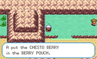
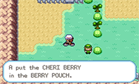
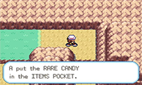
Rock Tunnel
Lavender Town
- Head south to the mart and buy:
- 4x Escape Rope (7x ↓)
- 7x Super Repel (↓)
Route 8
Gamer Rich
- Growlithe: Water Gun
- Vulpix: Water Gun
- (!) Quick Attack damage: 5(6)
Celadon City
- After obtaining Fly:
- Teach Fly to your bird.
- Heal to around 44 HP.
- Use Super Repel.
- Equip Black Glasses.
- Toss Moon Stone.
- Scroll to Guard Spec/X Special.
- Fly to Lavender Town.
Take the elevator to 5F (↓↓) and buy:
Take the elevator back down to 1F (↑↑)
Lavender Tower
Rival 4
Channeler Tammy
- Haunter: Water Gun/Water Pulse
Channeler Jennifer
- Gastly: Water Gun
Channeler Emilia
- Gastly: Water Gun
- Grab this Rare Candy before fighting Marowak.
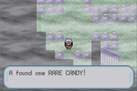
- Fly to Celadon City (cursor should be on Pokemon menu unless you bag manniped).
On the way to Koga
- Grab the Tea from the old lady in the Celadon Mansion.
- Grab this hidden Rare Candy and this hidden Max Elixir.
- Demount and mount bike on this tile.
- Use Super Repel before the grass in the second area (two up on menu).
- Grab this Full Restore and optionally this hidden Revive for safety.
- Fly to Fuchsia and head to the Gym (cursor is on Bag menu).
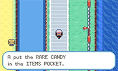
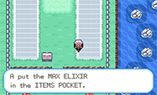


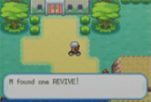
Fuschia City
- Teach Surf over Water Gun (Slot 1)
- Heal to around 30 HP.
Juggler Klirk
- Drowzee: Surf or X Special, Surf
- Drowzee: Surf
- Kadabra: Surf
- Drowzee: Surf
Koga
- Grab Strength from the warden.
- Use Super Repel.
- Heal for Growlithe if you need to X Speed/X Special.
- Fly to Pallet Town and Surf south to Cinnabar Island.
Cinnabar Island
- PRESS DOWN ON MENU.
- Grab this hidden Elixir and TM14 before grabbing the Secret Key on the table.
- Menu:
- Puzzle answers are A, B, B, B, A, B.
Blaine
- Say no to Bill and Fly to Celadon City (cursor is on Bag).
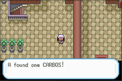
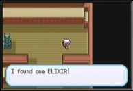
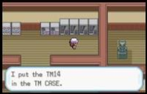
Celadon City
Beauty Tamia
- Bellsprout: Bite
- Bellsprout: Bite
- Cut the bush and menu (cursor is on Pokemon):
- (Teach Strength to Nidoran/Sandshrew).
- Cursor is on Bird!!!
- Teach Blizzard over Mega Kick (Slot 4).
- Rare Candy twice to level 44.
Beauty Lori
- Exeggcute: Bite
Erika
- Fly to Celadon City and bike to Silph Co. (cursor is on Bag).
Silph Co.
Saffron City
- Tile puzzle is Top Left, Bottom Left, Down.
Sabrina
Viridian City
- Take the spinny tile on the right.
Blackbelt Takashi
- Machoke: Surf
- 87.5% (14/16) to OHKO without Torrent.
- Machop: Surf
- Machoke: Surf
Cooltrainer Warren
- Marowak: Water Pulse
- Marowak: Water Pulse
- Rhyhorn: Water Pulse
- Nidorina: Water Pulse/Surf
- Nidoqueen: Water Pulse/Surf
Giovanni
- Rhyhorn: Water Pulse
- If less than 5 PP on Surf, you can Water Pulse everything in Torrent.
- Dugtrio: Water Pulse
- Nidoqueen: Water Pulse/Surf
- Nidoking: Water Pulse/Surf
- Rhyhorn: Surf/Water Pulse
- Water Pulse if only 3 Surf PP left.
- Use Full Restore before fighting the rival (cursor is on Pokemon).
Victory Road
- Teach Strength over Water Pulse (Slot 2) if you do not have a Nidoran/Sandshrew.
- Use Super Repel
- Box heal and deposit HM slaves (from Move menu).
- Buy max Full Restore (↓↓).
Elite Four
Lorelei
- Dewgong: X Special x4, Bite, Bite
- Surf if low roll from first Bite.
- Check your X Speed count here.
- Cloyster: Bite
- Slowbro: Bite
- Jynx: Surf
- Lapras: Bite x3
Bruno
- Heal with Oran Berry/Potion if in Shadow Punch range.
Agatha
- Full Restore before Lance.
Lance
- Heal to full HP and use Elixir before Champion.
Champion